| 部位 | LH | FSH | エストロゲン | 代表疾患 |
|---|---|---|---|---|
| 視床下部性 | 低〜正常 | 低〜正常 | 低 | 体重減少・過度の運動・ストレス・Kallmann症候群 |
| 下垂体性 | 低 | 低 | 低 | Sheehan症候群・下垂体腺腫（PRL産生） |
| 卵巣性 | 高 | 高 | 低 | 早発卵巣不全・Turner症候群・化学療法後 |
| 子宮性 | 正常 | 正常 | 正常 | Asherman症候群・Rokitansky症候群 |
| 選択肢 | 評価 |
|---|---|
| ａ 視 床 | 誤り。視床は性腺刺激ホルモンの調節に関与しない |
| ｂ 視床下部 | 誤り。視床下部性ならFSHは低〜正常 |
| ｃ 下垂体 | 誤り。下垂体性ならFSHは低値 |
| ｄ 副 腎 | 誤り。副腎はFSH分泌を規定しない |
| ｅ 卵 巣 | 正しい。FSH高値＋E2低値は卵巣性 |
| 項目 | 内容 |
|---|---|
| 診断基準（日本産科婦人科学会） | ①月経異常（無月経・稀発月経・無排卵周期症） ②多囊胞性卵巣（超音波で小卵胞が多数＝ネックレスサイン） ③血中男性ホルモン高値 または LH基礎値高値かつFSH基礎値正常 3つすべてを満たす |
| 随伴所見 | 肥満・インスリン抵抗性・多毛・にきび・LH/FSH比の上昇 |
| 基礎体温 | 一相性（無排卵）。エストロゲンは保たれゲスターゲン試験で消退出血あり |
| 治療 | ① 肥満例ではまず減量（インスリン抵抗性改善で排卵回復） ② クロミフェン（排卵誘発の第一選択） ③ 無効例：ゴナドトロピン療法（OHSS・多胎に注意）・腹腔鏡下卵巣多孔術 |
| 選択肢 | 評価 |
|---|---|
| ａ 休 職 | 誤り。小学校教師の勤務が不妊の原因という根拠はない |
| ｂ 体重の減量 | 正しい。排卵回復と妊娠合併症予防の双方に有効 |
| ｃ 妊娠の断念 | 誤り。30歳で治療可能な排卵障害であり断念する理由がない |
| ｄ 降圧薬の中止 | 誤り。自己判断の中止は危険。ただしACE阻害薬・ARBは妊娠中禁忌のため変更を検討する（本例はCa拮抗薬で継続可） |
| ｅ 体外授精の開始 | 誤り。まず生活指導・タイミング指導・排卵誘発から段階的に |
| 選択肢 | 評価 |
|---|---|
| ａ 腹部単純CT | 誤り。妊娠の可能性がある時点で被曝を伴う検査は避ける |
| ｂ 妊娠反応検査 | 正しい。最も簡便・迅速で、以後の方針をすべて規定する |
| ｃ 経腟超音波検査 | 重要だが順序は妊娠反応の後。妊娠反応陽性なら直ちに施行 |
| ｄ 子宮内膜組織診 | 誤り。妊娠を否定せずに施行すれば妊娠子宮を損傷しうる |
| ｅ プロゲステロン投与 | 誤り。診断確定前の治療的介入は不適切 |
| 所見 | 意味 |
|---|---|
| 乳房発育Tanner Ⅳ度 | エストロゲンは作用している |
| 腋毛なし・陰毛Tanner Ⅰ度 | アンドロゲンが作用していない |
| 腟は4cmの盲端・子宮腟部なし | Müller管由来器官（子宮・腟上部）が欠如 |
| 左鼠径部に径2cmの腫瘤 | 停留精巣を疑う |
| テストステロン820ng/dL（基準30〜90） | 男性域の高値＝精巣が存在し分泌している |
| LH 20mIU/mL（高値） | アンドロゲンのフィードバックが効かず上昇 |
| 疾患 | 核型 | 性腺 | 子宮 | 乳房発育 | 陰毛・腋毛 | 特徴 |
|---|---|---|---|---|---|---|
| アンドロゲン不応症 | 46,XY | 精巣 | なし | あり | なし | 鼠径部腫瘤・T高値 |
| Rokitansky症候群 | 46,XX | 卵巣 | なし | あり | あり | 腟欠損・T正常・排卵あり |
| Turner症候群 | 45,X等 | 索状性腺 | あり（小） | なし | あり | 低身長・翼状頸・外反肘・FSH高値 |
| 選択肢 | 評価 |
|---|---|
| ａ 頭部MRI | 誤り。下垂体性を疑う場面（本例はLH高値で下垂体は機能している） |
| ｂ 染色体検査 | 正しい。46,XYの証明が確定診断 |
| ｃ LHRH負荷試験 | 誤り。下垂体予備能の評価であり本例の診断には寄与しない |
| ｄ 子宮卵管造影検査 | 誤り。子宮が存在しないため施行できない |
| ｅ エストロゲン・プロゲステロン負荷試験 | 誤り。子宮内膜がなく消退出血は起こらない |
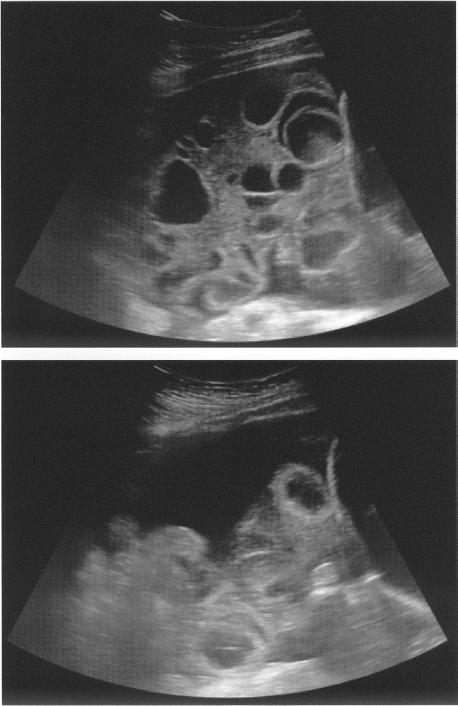
| 項目 | 内容 |
|---|---|
| 病態 | VEGFを介した血管透過性亢進で血管内水分が第三腔へ移動 |
| 誘因 | 排卵誘発（ゴナドトロピン療法）＋hCG投与、妊娠成立で増悪 |
| 危険因子 | 多囊胞性卵巣症候群〈PCOS〉・若年・やせ・多数の採卵 |
| 症状 | 腹部膨満・腹痛・悪心・呼吸困難（胸水）・乏尿 |
| 所見 | 卵巣腫大・腹水／胸水・血液濃縮（Ht上昇）・低蛋白血症・凝固能亢進 |
| 合併症 | 血栓塞栓症・腎前性腎不全・卵巣茎捻転 |
| 治療 | 輸液（細胞外液）による循環血漿量の確保＋血栓予防。利尿薬は血液濃縮を助長するため原則禁忌 |
| 選択肢 | 評価 |
|---|---|
| ａ 輸 液 | 正しい。血管内脱水の是正が最優先 |
| ｂ 血漿交換 | 誤り。適応がない |
| ｃ 抗菌薬投与 | 誤り。発熱なく感染徴候を認めない |
| ｄ 付属器摘出術 | 誤り。腫大卵巣は可逆的。茎捻転がなければ手術しない |
| ｅ アルブミン製剤投与 | 低アルブミン血症を伴う重症例で補助的に用いるが、本例はアルブミン3.9g/dLと保たれておりまず行う治療ではない |
| 三主徴 | 内容 |
|---|---|
| ① 利用可能エネルギー不足 | 消費エネルギーに摂取が追いつかない（やせ） |
| ② 視床下部性無月経 | GnRHパルス分泌が抑制され、LH・FSH・エストロゲンが低下 |
| ③ 骨粗鬆症 | 低エストロゲンにより骨吸収が亢進し骨量が減少 |
| 選択肢 | 評価 |
|---|---|
| ａ 痤 瘡 | 誤り。アンドロゲン過剰（PCOSなど）でみられる |
| ｂ 脂肪肝 | 誤り。肥満・過栄養に伴う。やせでは考えにくい |
| ｃ 骨粗鬆症 | 正しい。三主徴の一つで疲労骨折の原因 |
| ｄ 下垂体腺腫 | 誤り。やせや運動と因果関係はない |
| ｅ 子宮腺筋症 | 誤り。エストロゲン依存性で、低エストロゲン状態では進展しない |
| 選択肢 | 評価 |
|---|---|
| ａ 子宮はない。 | 正しい。AMHの作用でMüller管が退縮 |
| ｂ 性腺は卵巣である。 | 誤り。性腺は精巣（鼠径部腫瘤がそれ） |
| ｃ 染色体trisomyがある。 | 誤り。核型は46,XYでtrisomyではない |
| ｄ 基礎体温は二相性を示す。 | 誤り。排卵も黄体もなく一相性 |
| ｅ 男性ホルモンが欠損している。 | 誤り。テストステロンは分泌されているが受容体の異常で作用しない |
| 選択肢 | 評価 |
|---|---|
| ａ 「排卵日を見つけましょう」 | 正しい。まずタイミング指導 |
| ｂ 「子宮卵管造影検査をします」 | 時期尚早。1年経過後の不妊検査で考慮 |
| ｃ 「排卵誘発薬を服用してください」 | 誤り。二相性＝排卵しており適応なし |
| ｄ 「あなたの染色体検査をしましょう」 | 誤り。反復流産（不育症）などで考慮 |
| ｅ 「抗カルジオリピン抗体を検査します」 | 誤り。不育症の検査であり本例に適応なし |
| 所見 | 意味 |
|---|---|
| 身長144cm | 低身長 |
| 首の両側の皮膚が広く余る | 翼状頸〈webbed neck〉 |
| 上肢は肘から遠位が外反 | 外反肘〈cubitus valgus〉 |
| 原発性無月経・乳房Tanner Ⅰ度 | 二次性徴の欠如 |
| LH 34・FSH 39（ともに高値）／E2 10（低値） | 高ゴナドトロピン性性腺機能低下症 |
| 子宮は小さく卵巣は確認できず | 索状性腺〈streak gonad〉 |
| 選択肢 | 評価 |
|---|---|
| ａ エストロゲン・プロゲスチン療法 | 正しい。二次性徴誘導＋子宮内膜保護 |
| ｂ ゴナドトロピン療法 | 誤り。卵巣（索状性腺）が反応しない |
| ｃ プロゲスチン療法 | 誤り。単独では二次性徴を誘導できない |
| ｄ クロミフェン療法 | 誤り。卵胞が存在せず排卵誘発は不可能 |
| ｅ エストロゲン療法 | 不適。子宮があるため単独投与は子宮体癌のリスク |
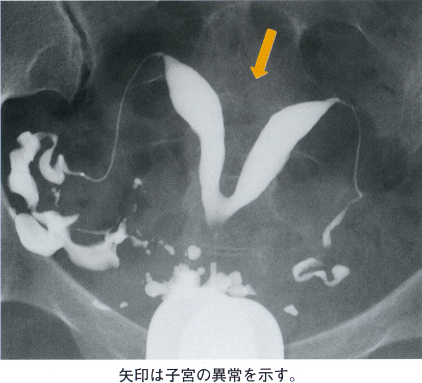
| 疾患 | HSG所見 |
|---|---|
| 子宮奇形 | 子宮腔が2つに分かれる（双角子宮・中隔子宮）、T字型（DES曝露） |
| 子宮筋腫（粘膜下） | 子宮腔の辺縁が平滑に圧排・欠損 |
| 子宮内膜ポリープ | 子宮腔内の小さな類円形の陰影欠損 |
| Asherman症候群 | 境界不整・角ばった多発性の陰影欠損（癒着） |
| 卵管閉塞・卵管留水腫 | 卵管が途中で途絶／膨大部が囊状に拡張し腹腔内造影剤散布なし |
| 選択肢 | 評価 |
|---|---|
| ａ 子宮奇形 | 正しい。子宮腔が2つに分かれる |
| ｂ 子宮筋腫 | 誤り。腔の平滑な圧排像を呈する |
| ｃ 子宮腺筋症 | 誤り。HSGでは診断困難。月経困難症・過多月経が主症状 |
| ｄ 子宮内膜炎 | 誤り。HSGで特徴的な像を示さない |
| ｅ 子宮内膜ポリープ | 誤り。小円形の陰影欠損として描出 |
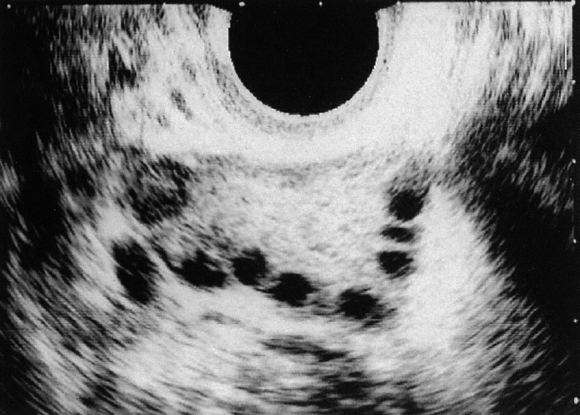
| 選択肢 | 評価 |
|---|---|
| ａ 夫の精液検査 | 有用。不妊原因の約半数は男性因子。必須のスクリーニング |
| ｂ 基礎体温の測定 | 有用。排卵の有無・黄体機能を評価 |
| ｃ プロゲステロン試験 | 有用性が低い。結果が自明で不妊原因を特定できない |
| ｄ 血中LH、FSHの測定 | 有用。LH/FSH比の上昇はPCOSを支持 |
| ｅ 血中テストステロンの測定 | 有用。高アンドロゲン血症の確認はPCOS診断基準の一つ |
| 所見 | 評価 |
|---|---|
| 不妊・月経不順 | ① 月経異常を満たす |
| 両側卵巣が軽度に腫大（経腟超音波） | ② 多囊胞性卵巣を満たす |
| LH 12.4（高値）／FSH 7.2（正常）、テストステロン100（高値） | ③ LH高値かつFSH正常、男性ホルモン高値を満たす |
| 基礎体温は一相性 | 無排卵 |
| 黄体ホルモン剤で消退出血あり | 第1度無月経＝エストロゲンは充足 |
| 身長152cm・体重65kg | BMI 28.1の肥満 |
| 項目 | 内容 |
|---|---|
| 診断基準（日本産科婦人科学会） | ①月経異常（無月経・稀発月経・無排卵周期症） ②多囊胞性卵巣（超音波で小卵胞が多数＝ネックレスサイン） ③血中男性ホルモン高値 または LH基礎値高値かつFSH基礎値正常 3つすべてを満たす |
| 随伴所見 | 肥満・インスリン抵抗性・多毛・にきび・LH/FSH比の上昇 |
| 基礎体温 | 一相性（無排卵）。エストロゲンは保たれゲスターゲン試験で消退出血あり |
| 治療 | ① 肥満例ではまず減量（インスリン抵抗性改善で排卵回復） ② クロミフェン（排卵誘発の第一選択） ③ 無効例：ゴナドトロピン療法（OHSS・多胎に注意）・腹腔鏡下卵巣多孔術 |
| 選択肢 | 評価 |
|---|---|
| ａ 減量指導 | 正しい。肥満合併PCOSの第一段階 |
| ｂ クロミフェン投与 | 正しい。排卵誘発の第一選択 |
| ｃ GnRHアゴニスト投与 | 誤り。持続投与はゴナドトロピンを抑制し排卵を止める |
| ｄ 卵胞刺激ホルモン投与 | 誤り。クロミフェン無効例の次段階。OHSS・多胎のリスクがあり「まず」行わない |
| ｅ ドパミンアゴニスト投与 | 誤り。高プロラクチン血症の治療薬。本例はPRL異常の記載なし |
| 薬剤 | 投与法の手がかり | 正体 | 作用 |
|---|---|---|---|
| 治療薬X | 月経5日目から5日間、経口服用 | クロミフェン | 視床下部のエストロゲン受容体を遮断しFSH分泌を促す。排卵誘発の第一選択。周期5日目前後から5日間内服する |
| 治療薬Y | 卵胞径が20mmとなった時点で筋肉注射 | ヒト絨毛性ゴナドトロピン〈hCG〉 | hCGはLHと同じ受容体に作用しLHサージを代替して約36〜40時間後に排卵を起こす（排卵トリガー） |
| 選択肢 | 評価 |
|---|---|
| ａ エストロゲン | 誤り。排卵誘発薬ではない（頸管粘液改善などに用いる程度） |
| ｂ クロミフェン | 正しい＝治療薬X。月経5日目から5日間経口 |
| ｃ GnRHアゴニスト | 誤り。持続投与でゴナドトロピンを抑制する |
| ｄ ヒト絨毛性ゴナドトロピン〈hCG〉 | 正しい＝治療薬Y。排卵トリガーとして筋注 |
| ｅ ヒト閉経期尿性ゴナドトロピン〈hMG〉 | 誤り。FSH作用で卵胞発育を促す注射薬であり、経口のXでも排卵トリガーのYでもない |
| 膜性 | 成因 | 超音波所見 | 合併症 |
|---|---|---|---|
| 二絨毛膜二羊膜〈DD〉 | 二卵性すべて＋一卵性の一部 | λサイン〈twin peak〉 | 早産・前期破水・羊水過多・妊娠高血圧症候群 |
| 一絨毛膜二羊膜〈MD〉 | 一卵性 | T サイン | 上記＋双胎間輸血症候群〈TTTS〉・一児死亡時の他児障害 |
| 一絨毛膜一羊膜〈MM〉 | 一卵性（分割が遅い） | 隔壁なし | 上記＋臍帯相互巻絡・結合双胎 |
| 選択肢 | 評価 |
|---|---|
| ａ 早 産 | 起こる。双胎最大の合併症（子宮過伸展） |
| ｂ 結合双胎 | 起こらない。一絨毛膜一羊膜双胎で生じる |
| ｃ 前期破水 | 起こる。子宮内圧上昇・子宮過伸展による |
| ｄ 羊水過多症 | 起こる。DD双胎でも羊水過多は生じうる |
| ｅ 双胎間輸血症候群 | 起こらない。一絨毛膜性の胎盤血管吻合が必須 |
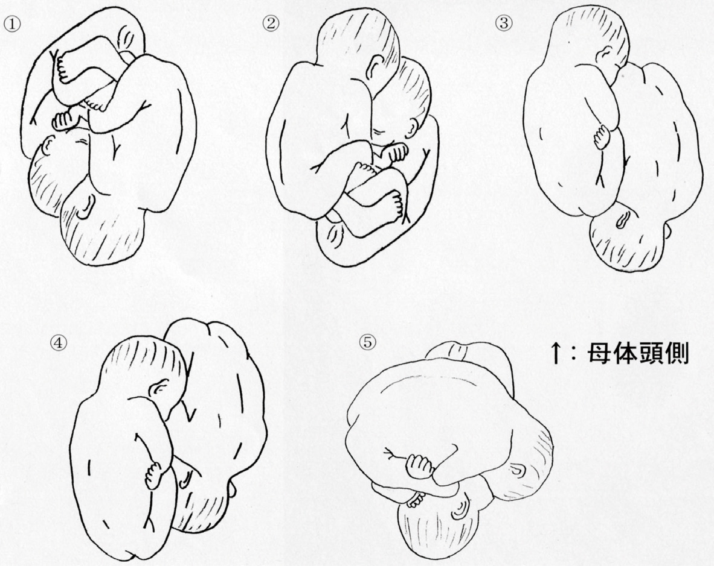
| 選択肢 | 評価 |
|---|---|
| ａ ① | 正しい。両児頭位＝経腟分娩の可能性が最も高い |
| ｂ ② | 第1子が頭位でない、あるいは横位を含む組合せで経腟分娩は困難 |
| ｃ ③ | 同上 |
| ｄ ④ | 同上 |
| ｅ ⑤ | 同上 |
| 原因 | 特徴 |
|---|---|
| 下垂体腺腫 | プロラクチノーマ（PRLが著明高値、腫瘍が大きいと頭痛・両耳側半盲） |
| 薬剤性 | 抗精神病薬・抗うつ薬・メトクロプラミド・スルピリドなどドパミンD2受容体遮断薬 |
| 原発性甲状腺機能低下症 | TRH上昇がPRL分泌も刺激（TSHも高値となる） |
| 視床下部・下垂体茎病変 | ドパミン（PRL抑制因子）の到達が阻害される |
| 生理的 | 妊娠・授乳・乳頭刺激・ストレス |
| 選択肢 | 評価 |
|---|---|
| ａ 腹部CT | 誤り。副腎・卵巣病変を疑う所見がない |
| ｂ FDG-PET | 誤り。悪性腫瘍検索であり適応でない |
| ｃ 下垂体MRI | 正しい。プロラクチノーマの描出に最も有用 |
| ｄ マンモグラフィ | 誤り。乳汁分泌があっても乳腺腫瘤の精査ではない |
| ｅ 甲状腺超音波検査 | 誤り。TSHが正常で甲状腺性は既に除外されている |
| 項目 | 内容 |
|---|---|
| 病態 | VEGFを介した血管透過性亢進で血管内水分が第三腔へ移動 |
| 誘因 | 排卵誘発（ゴナドトロピン療法）＋hCG投与、妊娠成立で増悪 |
| 危険因子 | 多囊胞性卵巣症候群〈PCOS〉・若年・やせ・多数の採卵 |
| 症状 | 腹部膨満・腹痛・悪心・呼吸困難（胸水）・乏尿 |
| 所見 | 卵巣腫大・腹水／胸水・血液濃縮（Ht上昇）・低蛋白血症・凝固能亢進 |
| 合併症 | 血栓塞栓症・腎前性腎不全・卵巣茎捻転 |
| 治療 | 輸液（細胞外液）による循環血漿量の確保＋血栓予防。利尿薬は血液濃縮を助長するため原則禁忌 |
| 選択肢 | 評価 |
|---|---|
| ａ 腹膜炎 | 誤り。発熱・腹膜刺激徴候がない |
| ｂ 右心不全 | 誤り。心エコー検査で異常を認めない |
| ｃ 腎機能障害 | 誤り。クレアチニン0.81mg/dLと正常。BUN上昇は脱水（腎前性）を反映 |
| ｄ 門脈圧亢進 | 誤り。肝疾患を示す所見がない |
| ｅ 血管透過性亢進 | 正しい。VEGFを介したOHSSの本態 |
| 選択肢 | 評価 |
|---|---|
| ａ GH | 誤り。先端巨大症を示す所見（手足の腫大等）がない |
| ｂ FSH | 誤り。高PRL血症ではGnRHが抑制されFSHはむしろ低〜正常 |
| ｃ TSH | やや不適。甲状腺機能低下症は高PRL血症の原因となりうるが、甲状腺腫大なく本例で「最も」高値が予想されるのはPRL |
| ｄ ACTH | 誤り。Cushing徴候を示す所見がない |
| ｅ プロラクチン | 正しい。乳汁漏出―無月経症候群 |
| 部位 | LH | FSH | エストロゲン | 基礎体温 | 代表疾患 |
|---|---|---|---|---|---|
| 視床下部性 | 低〜正常 | 低〜正常 | 低 | 二相性でない | 体重減少・過度の運動・ストレス・Kallmann症候群 |
| 下垂体性 | 低 | 低 | 低 | 二相性でない | Sheehan症候群・下垂体腺腫（PRL産生） |
| 卵巣性 | 高 | 高 | 低 | 二相性でない | 早発卵巣不全・Turner症候群・化学療法後 |
| 子宮性・腟性 | 正常 | 正常 | 正常 | 二相性 | Asherman症候群・腟閉鎖・処女膜閉鎖 |
| 選択肢 | 評価 |
|---|---|
| ａ 視床下部 | 誤り。GnRH低下によりFSHも低値 |
| ｂ 下垂体 | 誤り。FSHを産生できず低値 |
| ｃ 卵 巣 | 正しい。フィードバック解除でFSH高値 |
| ｄ 子 宮 | 誤り。ホルモンは正常で基礎体温も二相性 |
| ｅ 腟 | 誤り。ホルモンは正常 |
| 選択肢 | 評価 |
|---|---|
| ａ 子宮鏡検査 | 有用。子宮内膜ポリープ・粘膜下筋腫・子宮腔癒着の評価 |
| ｂ 超音波検査 | 有用。多囊胞性卵巣（ネックレスサイン）・子宮病変の評価 |
| ｃ 基礎体温測定 | 有用。排卵の有無・黄体機能を評価 |
| ｄ 子宮卵管造影検査 | 有用。卵管疎通性の評価は不妊検査の基本 |
| ｅ プロゲステロン負荷試験 | 有用でない。結果が自明で不妊原因を特定できない |
| 副作用 | 機序 |
|---|---|
| 浮腫・血圧上昇 | 腎のPGE2・PGI2による血管拡張とNa排泄が抑制され、腎血流低下とNa・水の貯留を来す |
| 鼻出血（出血傾向） | COX-1阻害で血小板のトロンボキサンA2産生が抑制され、血小板凝集能が低下する |
| 上腹部痛（消化性潰瘍） | 胃粘膜保護作用をもつPGE2が減少し、粘液・重炭酸分泌が低下する |
| 腎機能障害 | 長期・大量使用で腎乳頭壊死・間質性腎炎 |
| 選択肢 | 評価 |
|---|---|
| ａ 浮 腫 | 注意すべき。腎でのNa・水貯留 |
| ｂ 鼻出血 | 注意すべき。血小板機能抑制による出血傾向 |
| ｃ 血圧上昇 | 注意すべき。Na貯留・腎血管収縮 |
| ｄ 乳汁漏出 | 誤り。NSAIDの副作用ではない（高PRL血症で起こる） |
| ｅ 上腹部痛 | 注意すべき。消化性潰瘍・胃粘膜障害 |
| 選択肢 | 評価 |
|---|---|
| 体 重 | 関連あり。黄体期のプロゲステロンによる水分貯留で軽度増加 |
| 中間期出血 | 関連あり。排卵期に一過性にエストロゲンが低下し内膜が一部剝離 |
| 乳房緊満感 | 関連あり。黄体期のプロゲステロン・エストロゲンによる乳腺の変化 |
| 透明な頸管粘液 | 関連あり。排卵期にエストロゲンが頸管粘液を増量・水様化し、牽糸性・羊歯状結晶形成が最大となる |
| 黄色泡沫状腟分泌 | 関連なし。腟トリコモナス症に特徴的な帯下で、強い掻痒感・悪臭を伴う。性感染症であり周期性はない |
| 帯下の性状 | 原因 |
|---|---|
| 黄色泡沫状・悪臭・掻痒 | 腟トリコモナス症 |
| 白色酒粕状・カッテージチーズ様 | 腟カンジダ症 |
| 灰白色・魚臭様（アミン臭） | 細菌性腟症 |
| 膿性・下腹痛 | 淋菌・クラミジア頸管炎 |
| 透明・牽糸性（周期性） | 排卵期の生理的頸管粘液 |
| 方向 | 項目 |
|---|---|
| 上がる | 帝王切開実施率、妊娠糖尿病、妊娠高血圧症候群、前置胎盤、児の染色体異常（21トリソミー等）、流産率 |
| 下がる | 妊娠率（自然・体外受精とも）、妊娠成立後の生児獲得率（流産率上昇の裏返し） |
| 選択肢 | 評価 |
|---|---|
| ａ 帝王切開実施率 | 高率。微弱陣痛・軟産道強靱・合併症の増加による |
| ｂ 妊娠糖尿病の罹患率 | 高率。加齢に伴うインスリン抵抗性の増大 |
| ｃ 児の染色体異常発生率 | 高率。卵子の減数分裂時の染色体不分離が増加 |
| ｄ 妊娠成立後の生児獲得率 | 低率。流産率が上昇するため |
| ｅ 体外受精－胚移植を行った場合の妊娠率 | 低率。卵子の質の低下は補えない |
| 部位 | 原因 |
|---|---|
| 視床下部性 | 体重減少・神経性やせ症、過度のスポーツトレーニング、ストレス、全身性消耗性疾患 |
| 下垂体性 | 高プロラクチン血症（プロラクチノーマ・薬剤性）、Sheehan症候群 |
| 卵巣性 | 早発卵巣不全、全身放射線照射・化学療法による卵巣機能廃絶 |
| その他 | 過度の体重増加（肥満） → PCOS的病態で排卵障害。甲状腺機能異常、Cushing症候群 |
| 子宮性 | Asherman症候群（子宮内容除去術後の子宮腔癒着） |
| 選択肢 | 評価 |
|---|---|
| ａ 過度の体重増加 | 原因となる。肥満→インスリン抵抗性→排卵障害 |
| ｂ 全身放射線照射 | 原因となる。卵巣が不可逆的に障害される |
| ｃ 全身性消耗性疾患 | 原因となる。視床下部性無月経 |
| ｄ 低プロラクチン血症 | 原因となりにくい。無月経を起こすのは「高」PRL血症 |
| ｅ 過度のスポーツトレーニング | 原因となる。視床下部性無月経（女性アスリートの三主徴） |
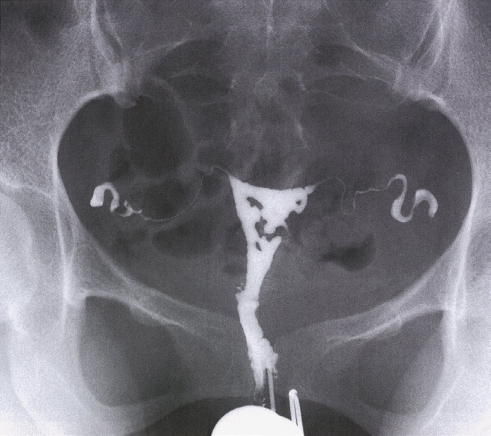
| 疾患 | HSG所見 |
|---|---|
| 子宮奇形 | 子宮腔が2つに分かれる（双角子宮・中隔子宮） |
| 子宮筋腫（粘膜下） | 子宮腔の辺縁が平滑に圧排・欠損 |
| 子宮内膜ポリープ | 子宮腔内の小さな類円形の陰影欠損 |
| Asherman症候群 | 境界不整・角ばった多発性の陰影欠損（子宮腔癒着） |
| 卵管閉塞 | 卵管が途中で途絶し造影剤の腹腔内散布がない |
| 卵管留水腫 | 卵管膨大部が囊状に拡張し腹腔内へ流出しない |
| 選択肢 | 評価 |
|---|---|
| ａ 抗菌薬投与 | 誤り。感染徴候がなく子宮内膜炎の所見もない |
| ｂ 子宮鏡下手術 | 正しい。癒着を直視下に剝離し子宮腔を再建する |
| ｃ 排卵誘発薬投与 | 誤り。基礎体温二相性で排卵しており適応なし |
| ｄ エストロゲン投与 | 術後の内膜再生・再癒着予防に併用するが、癒着そのものは解除できず単独では不適 |
| ｅ ドパミン作動薬投与 | 誤り。乳汁分泌なく高PRL血症は否定的 |
| 疾患 | 卵巣・性腺 | 腟・子宮 | 特徴 |
|---|---|---|---|
| 処女膜閉鎖症 | あり | あり | 経血が貯留（腟留血腫）。外陰で膨隆した処女膜が青紫色に透見される |
| 腟閉鎖症 | あり | 欠損／盲端 | 経血が貯留。周期的下腹部痛 |
| Rokitansky症候群 | あり（卵巣正常） | 腟は盲端で子宮なし | 経血貯留なし。排卵はあり基礎体温は二相性。核型46,XX |
| アンドロゲン不応症 | 性腺は精巣 | 腟は盲端で子宮なし | 陰毛・腋毛を欠く。鼠径部腫瘤・T高値。核型46,XY |
| 選択肢 | 評価 |
|---|---|
| ａ 頭部CT | 誤り。二次性徴が正常で視床下部・下垂体障害は考えにくい |
| ｂ 血中FSH | 誤り。二次性徴の完成から卵巣機能は正常と推定できる |
| ｃ 腹部超音波検査 | 正しい。子宮の有無・経血貯留を非侵襲的に確認できる |
| ｄ 末梢血染色体分析 | 子宮がない場合の鑑別（Rokitansky vs アンドロゲン不応症）に有用だが「最初に行う検査」ではない |
| ｅ 血中エストラジオール | 誤り。乳腺発育から充足は明らかで情報量が乏しい |
| 部位 | LH | FSH | エストロゲン | 基礎体温 | 代表疾患 |
|---|---|---|---|---|---|
| 視床下部性 | 低〜正常 | 低〜正常 | 低 | 二相性でない | 体重減少・過度の運動・ストレス・Kallmann症候群 |
| 下垂体性 | 低 | 低 | 低 | 二相性でない | Sheehan症候群・下垂体腺腫（PRL産生） |
| 卵巣性 | 高 | 高 | 低 | 二相性でない | 早発卵巣不全・Turner症候群・化学療法後 |
| 子宮性・腟性 | 正常 | 正常 | 正常 | 二相性 | Asherman症候群・腟閉鎖・処女膜閉鎖 |
| 選択肢 | 評価 |
|---|---|
| ａ 嗅 球 | 誤り。Kallmann症候群は嗅覚障害＋低ゴナドトロピンで本例と逆 |
| ｂ 視床下部 | 誤り。視床下部性ならLH・FSHは低値 |
| ｃ 下垂体 | 誤り。下垂体性ならLH・FSHは低値 |
| ｄ 卵 巣 | 正しい。LH・FSH高値＋E2低値 |
| ｅ 子 宮 | 誤り。子宮性ならホルモンはすべて正常 |
| 項目 | 正常範囲 | 異常 |
|---|---|---|
| 初経 | 10〜14歳（平均約12歳） | 15歳以上：遅発月経／18歳までになければ原発性無月経 |
| 閉経 | 平均約50歳 | 43歳未満：早発閉経（40歳未満は早発卵巣不全〈POI〉） |
| 月経周期 | 25〜38日 | 39日以上：稀発月経／24日以内：頻発月経 |
| 周期の変動 | 6日以内 | 7日以上：不整周期 |
| 持続期間 | 3〜7日 | 8日以上：過長月経／2日以内：過短月経 |
| 経血量 | 20〜140mL | 過多月経／過少月経 |
| 選択肢 | 評価 |
|---|---|
| ａ 持続期間5 日 | 正常。基準は3〜7日 |
| ｂ 周期28 日 | 正常。基準は25〜38日 |
| ｃ 周期の変動2 日 | 正常。基準は6日以内 |
| ｄ 初経12 歳 | 正常。平均は約12歳 |
| ｅ 閉経38 歳 | 異常。43歳未満の閉経＝早発閉経 |
| 分類 | 内容 |
|---|---|
| 染色体異常 | 夫婦いずれかの均衡型転座（約5％）、胎児の偶発的染色体異常（最多） |
| 子宮形態異常 | 中隔子宮・双角子宮・粘膜下筋腫・Asherman症候群 |
| 内分泌異常 | 甲状腺機能低下症・亢進症、糖尿病、高プロラクチン血症 |
| 免疫・凝固異常 | 抗リン脂質抗体症候群（抗カルジオリピン抗体・ループスアンチコアグラント） |
| 原因不明 | 約半数を占める。精神的ケア〈tender loving care〉が有効 |
| 選択肢 | 評価 |
|---|---|
| ａ 子宮奇形 | 原因となる。中隔子宮などで着床・胎盤形成が障害される |
| ｂ 月経前症候群 | 考えにくい。黄体期の症状であり妊娠維持と無関係 |
| ｃ 甲状腺機能低下症 | 原因となる。内分泌異常として流産率を高める |
| ｄ 染色体均衡型転座 | 原因となる。夫婦のいずれかに存在すると不均衡型配偶子を生じる |
| ｅ 抗リン脂質抗体症候群 | 原因となる。胎盤の血栓形成・絨毛障害を来す |
| 疾患 | 機序 |
|---|---|
| 多囊胞性卵巣症候群〈PCOS〉 | 卵巣の莢膜細胞由来のアンドロゲンが増加。LH高値・インスリン抵抗性が病態に関与 |
| 先天性副腎皮質過形成 | 21水酸化酵素欠損症が最多。コルチゾール合成が阻害されACTH上昇 → 副腎アンドロゲン過剰。女児では外性器の男性化を来す |
| 副腎・卵巣のアンドロゲン産生腫瘍 | 急速に進行する多毛・男性化徴候 |
| Cushing症候群 | 副腎アンドロゲンの増加を伴うことがある |
| 選択肢 | 評価 |
|---|---|
| ａ 甲状腺機能亢進症 | 誤り。むしろ毛髪は細く脱毛傾向となる |
| ｂ 多囊胞性卵巣症候群 | 正しい。卵巣性アンドロゲン過剰 |
| ｃ 副甲状腺機能低下症 | 誤り。テタニー・低Ca血症が主でアンドロゲンと無関係 |
| ｄ 下垂体前葉機能低下症 | 誤り。ACTH・ゴナドトロピン低下でむしろ体毛は脱落する |
| ｅ 先天性副腎皮質過形成 | 正しい。副腎アンドロゲン過剰 |
| 選択肢 | 評価 |
|---|---|
| ａ 出生500人に約1人が体外受精児である。 | 誤り。生殖補助医療による出生児は年々増加しており、近年は出生児の10人に1人前後を占める。500人に1人は著しい過小評価 |
| ｂ 女性不妊の頻度は男性不妊の約5倍である。 | 誤り。男性因子は不妊原因の約半数に関与し、女性因子と大きな差はない |
| ｃ 40歳代女性の不妊症の頻度は約10％である。 | 誤り。40歳代では妊孕性が著しく低下し、不妊の頻度ははるかに高い |
| ｄ 同年齢層では体外受精の流産率は自然妊娠よりも高い。 | 誤り。流産率を規定するのは年齢（卵子の質）であり受精方法ではない。同年齢なら同程度 |
| ｅ 女性の加齢とともに体外受精による妊娠率は低下する。 | 正しい |
| 選択肢 | 評価 |
|---|---|
| ａ 希発月経 | 誤り。周期39日以上のこと。本例は周期28〜35日で正常 |
| ｂ 黄体機能不全 | 誤り。黄体期短縮・不妊が問題となる。2週続く出血の説明にならない |
| ｃ 機能性子宮出血 | 正しい。思春期の無排卵性周期による破綻出血 |
| ｄ 子宮内膜増殖症 | 誤り。長期の無排卵で生じるが15歳では稀 |
| ｅ 子宮内膜ポリープ | 誤り。性成熟期〜更年期に多く、思春期では稀 |
| 選択肢 | 評価 |
|---|---|
| ａ 20〜24歳 | 誤り。晩産化で大きく減少 |
| ｂ 25〜29歳 | 誤り。かつての最多年齢階級だが現在は2位 |
| ｃ 30〜34歳 | 正しい。2005年以降の最多年齢階級 |
| ｄ 35〜39歳 | 誤り。増加傾向だが30〜34歳には及ばない |
| ｅ 40〜44歳 | 誤り。増加しているが出生数は少ない |
| 適応 | 理由 |
|---|---|
| 卵管因子 | 両側卵管閉塞・卵管留水腫・卵管形成術後の不成功。精子と卵子が出会えないため、体外で受精させる |
| 男性因子 | 乏精子症・精子無力症。高度な場合は顕微授精〈ICSI〉を併用 |
| 免疫因子 | 抗精子抗体陽性 |
| 子宮内膜症 | 中等症以上 |
| 原因不明不妊 | タイミング法・人工授精で妊娠に至らない場合 |
| 選択肢 | 評価 |
|---|---|
| ａ 不育症 | 誤り。妊娠は成立しており、受精を助ける治療では解決しない |
| ｂ 乏精子症 | 正しい。体外受精（高度例はICSI）の適応 |
| ｃ 子宮筋腫 | 誤り。まず筋腫核出術など原因治療を行う |
| ｄ 黄体機能不全 | 誤り。黄体補充（プロゲステロン投与）で対応 |
| ｅ 両側卵管閉塞 | 正しい。IVF-ETの最も古典的かつ絶対的な適応 |
| 分類 | 内容 |
|---|---|
| 染色体異常 | 夫婦いずれかの均衡型転座（約5％）、胎児の偶発的染色体異常（最多） |
| 子宮形態異常 | 中隔子宮・双角子宮・粘膜下筋腫・Asherman症候群 |
| 内分泌異常 | 甲状腺機能低下症・亢進症、糖尿病、高プロラクチン血症 |
| 免疫・凝固異常 | 抗リン脂質抗体症候群（抗カルジオリピン抗体・ループスアンチコアグラント） |
| 原因不明 | 約半数を占める。精神的ケア〈tender loving care〉が有効 |
| 選択肢 | 評価 |
|---|---|
| ａ 排卵誘発 | 誤り。月経周期28日型・整で排卵は正常 |
| ｂ 骨盤部CT | 誤り。被曝を伴い、子宮形態評価はHSG・MRIで行う |
| ｃ 避妊の継続 | 誤り。37歳で妊孕性は低下しつつあり、避妊継続は不利益 |
| ｄ 精神的ケア | 正しい。不安の軽減自体が生児獲得率を高める |
| ｅ 夫の精液検査 | 誤り。妊娠は成立しており男性因子は否定的 |
| 選択肢 | 評価 |
|---|---|
| ａ 妊 娠 | 誤り。妊娠中に消退出血は起こらない |
| ｂ 早発閉経 | 誤り。卵巣性で第2度無月経となり、消退出血は起こりにくい |
| ｃ 視床下部性無月経 | 正しい。体重減少・過度の運動が誘因 |
| ｄ 多囊胞性卵巣症候群 | 誤り。肥満・多毛・多囊胞性卵巣を伴い、本例はやせで卵巣も正常 |
| ｅ Asherman症候群 | 誤り。子宮性無月経で消退出血は起こらない。子宮内容除去術の既往もない |
| 部位 | LH | FSH | エストロゲン | 基礎体温 | 代表疾患 |
|---|---|---|---|---|---|
| 視床下部性 | 低〜正常 | 低〜正常 | 低 | 二相性でない | 体重減少・過度の運動・ストレス・Kallmann症候群 |
| 下垂体性 | 低 | 低 | 低 | 二相性でない | Sheehan症候群・下垂体腺腫（PRL産生） |
| 卵巣性 | 高 | 高 | 低 | 二相性でない | 早発卵巣不全・Turner症候群・化学療法後 |
| 子宮性・腟性 | 正常 | 正常 | 正常 | 二相性 | Asherman症候群・腟閉鎖・処女膜閉鎖 |
| 選択肢 | 評価 |
|---|---|
| ａ 視床下部 | 誤り。障害されればGnRHが低下し無排卵＝一相性となる |
| ｂ 下垂体 | 誤り。同上、無排卵で一相性 |
| ｃ 卵 巣 | 誤り。黄体が形成されず一相性 |
| ｄ 子 宮 | 正しい。Asherman症候群・子宮欠損。排卵はあり二相性 |
| ｅ 腟 | 正しい。腟閉鎖・処女膜閉鎖。排卵はあり二相性 |
| 選択肢 | 評価 |
|---|---|
| ａ 視床下部・下垂体 | 正しい。体重減少によるGnRHパルス分泌の抑制 |
| ｂ 甲状腺 | 誤り。甲状腺機能異常を示す所見がない |
| ｃ 副腎皮質 | 誤り。Cushing症候群・副腎不全を示す所見がない |
| ｄ 卵 巣 | 誤り。卵巣性ならLH・FSHが高値となる |
| ｅ 子 宮 | 誤り。子宮性なら子宮内容除去術などの既往がある |
| 三主徴 | 内容 |
|---|---|
| ① 利用可能エネルギー不足 | 消費に摂取が追いつかない（意図的減量・摂食障害を伴うこともある） |
| ② 視床下部性無月経 | GnRHパルス分泌が抑制されLH・FSH・エストロゲンが低下 |
| ③ 骨粗鬆症 | 低エストロゲンで骨吸収が亢進し疲労骨折を反復 |
| 選択肢 | 評価 |
|---|---|
| ａ 睡眠時間 | 一般的な生活習慣の問診だが、本例の無月経の説明としての重要度は低い |
| ｂ 便通の回数 | 甲状腺機能低下症・摂食障害で問題となりうるが優先度は低い |
| ｃ 体重の増減 | 正しい。BMI 15.4のやせの経過を把握する |
| ｄ 乳汁漏出の有無 | 高プロラクチン血症の除外に有用だが、やせと運動という強い誘因がある本例では優先度が下がる |
| ｅ 運動部での練習量 | 正しい。エネルギー消費量が無月経を規定する |
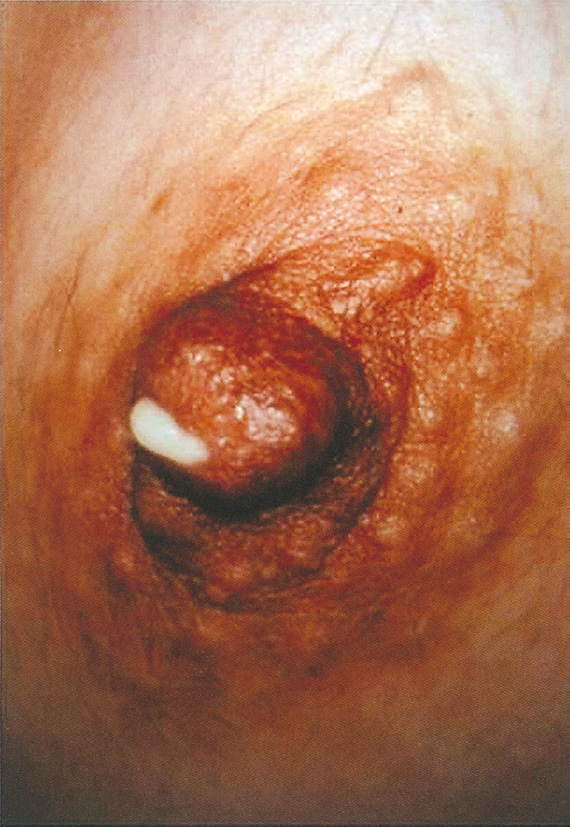
| 臓器 | 関与 |
|---|---|
| ① 視床下部 | ドパミン〈PIF：プロラクチン抑制因子〉を分泌し、下垂体からのPRL分泌を恒常的に抑制している。視床下部・下垂体茎の病変ではドパミンが届かずPRLが上昇する |
| ② 下垂体 | 前葉のラクトトロフからPRLを産生・分泌。プロラクチノーマでは自律的に大量分泌される |
| ③ 甲状腺 | 原発性甲状腺機能低下症では代償性にTRHが上昇し、TRHがTSHのみならずPRL分泌をも刺激する |
| 原因 | 特徴 |
|---|---|
| 下垂体腺腫 | プロラクチノーマ。PRLが著明高値、腫瘍が大きいと頭痛・両耳側半盲 |
| 薬剤性 | 抗精神病薬・抗うつ薬・メトクロプラミド・スルピリドなどのドパミンD2受容体遮断薬 |
| 原発性甲状腺機能低下症 | TRHの上昇がPRL分泌も刺激する（TSHも高値） |
| 視床下部・下垂体茎病変 | ドパミン（PRL抑制因子）の到達が阻害される |
| 生理的 | 妊娠・授乳・乳頭刺激・ストレス |
| 選択肢 | 評価 |
|---|---|
| ａ 視床下部 | 正しい。ドパミン（PIF）によるPRL分泌抑制 |
| ｂ 下垂体 | 正しい。PRLの産生部位（プロラクチノーマ） |
| ｃ 甲状腺 | 正しい。機能低下症ではTRH上昇を介しPRLが上昇 |
| ｄ 副腎皮質 | 誤り。PRL分泌に関与しない |
| ｅ 卵 巣 | 誤り。PRLにより抑制される側であり原因臓器ではない |
| 項目 | 内容 |
|---|---|
| 病態 | VEGFを介した血管透過性亢進で血管内水分が第三腔（腹腔・胸腔）へ移動 |
| 誘因 | ゴナドトロピン療法〈hMG-hCG療法〉、hCG投与、妊娠成立で増悪 |
| 危険因子 | 多囊胞性卵巣症候群〈PCOS〉・若年・やせ・多数の採卵 |
| 症状 | 腹部膨満・腹痛・悪心・呼吸困難（胸水）・乏尿 |
| 所見 | 卵巣腫大・腹水／胸水・血液濃縮（Ht上昇）・低蛋白血症・凝固能亢進 |
| 合併症 | 血栓塞栓症・腎前性腎不全・卵巣茎捻転 |
| 治療 | 電解質輸液で循環血漿量を確保＋血栓予防。乏尿には低用量ドパミンで腎血流を増やす。利尿薬は血液濃縮を助長するため原則禁忌 |
| 選択肢 | 評価 |
|---|---|
| ａ 輸 液 | 正しい。血管内脱水の是正が最優先 |
| ｂ ドパミン投与 | 正しい。低用量で腎血流を増やし乏尿を改善 |
| ｃ 高浸透圧利尿薬投与 | 禁忌。血液濃縮・血栓症を助長する |
| ｄ 副腎皮質ステロイド投与 | 誤り。有効性が確立していない |
| ｅ ヒト絨毛性ゴナドトロピン投与 | 禁忌。OHSSを増悪させる |
| 避妊法 | 確実性 | 特徴 |
|---|---|---|
| 子宮内避妊器具〈IUD〉 | 高い（1％前後） | 使用者に依存しない。長期間有効。ホルモン非依存（銅付加）で血栓リスクなし |
| 経口避妊薬〈ピル〉 | 高い | 35歳以上＋15本/日以上の喫煙、重症高血圧、血栓症既往、片頭痛（前兆あり）は禁忌 |
| コンドーム | 中等度 | 使用者の手技に依存。性感染症の予防効果あり |
| ペッサリー | 低い | 正しい装着が難しく失敗率が高い |
| 周期的禁欲法（オギノ式） | 最も低い | 月経不順では特に不確実 |
| 選択肢 | 評価 |
|---|---|
| ａ ペッサリー | 誤り。失敗率が高く「確実な避妊」に該当しない |
| ｂ コンドーム | 誤り。性感染症予防には有用だが避妊の確実性は劣る |
| ｃ 周期的禁欲法 | 誤り。最も失敗率が高い |
| ｄ 経口避妊薬〈ピル〉 | 禁忌。35歳以上＋大量喫煙＋重症高血圧 |
| ｅ 子宮内避妊器具〈IUD〉 | 正しい。確実性が高く本例の禁忌に抵触しない |
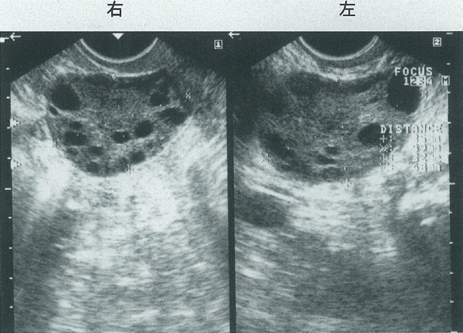
| 項目 | 内容 |
|---|---|
| 診断基準（日本産科婦人科学会） | ①月経異常（無月経・稀発月経・無排卵周期症） ②多囊胞性卵巣（超音波で小卵胞が多数＝ネックレスサイン） ③血中男性ホルモン高値 または LH基礎値高値かつFSH基礎値正常 3つすべてを満たす |
| 随伴所見 | 肥満・インスリン抵抗性・多毛・にきび・LH/FSH比の上昇（FSHは正常） |
| 基礎体温 | 一相性（無排卵）。エストロゲンは保たれゲスターゲン試験で消退出血あり |
| 治療 | ① 肥満例ではまず減量（インスリン抵抗性改善で排卵回復） ② クロミフェン（排卵誘発の第一選択） ③ 無効例：ゴナドトロピン療法（OHSS・多胎に注意） ④ 腹腔鏡下卵巣多孔術（薬物抵抗例） |
| 選択肢 | 評価 |
|---|---|
| ａ 高FSH血症である。 | 誤り。PCOSではLHが高値でFSHは正常（LH/FSH比の上昇）。FSH高値は卵巣性無月経を示す |
| ｂ 男性化徴候を認める。 | 正しい。両下肢の多毛はアンドロゲン過剰の徴候 |
| ｃ クロミフェンは無効である。 | 誤り。クロミフェンはPCOSの排卵誘発の第一選択で多くの症例で有効 |
| ｄ 卵巣楔状切除術が第一選択である。 | 誤り。術後癒着の問題があり現在はほとんど行われない。薬物抵抗例に腹腔鏡下卵巣多孔術を行うが、いずれも第一選択ではない |
| ｅ ゴナドトロピンで卵巣過剰刺激症候群を起こしやすい。 | 正しい。多数の小卵胞が一斉に発育するため |
| 原因 | 内容 |
|---|---|
| 染色体異常 | 夫婦いずれかの均衡型転座（約5％）。保因者自身は健常だが、減数分裂で不均衡型の配偶子を生じ流産に至る。なお流産児の染色体異常（偶発的な数的異常）は流産全体の最大の原因 |
| 抗リン脂質抗体症候群 | 胎盤の血栓形成・絨毛障害により流産・死産を来す。抗カルジオリピン抗体・ループスアンチコアグラント・抗β2GPI抗体を検査する。治療は低用量アスピリン＋ヘパリン |
| 子宮形態異常 | 中隔子宮・双角子宮・粘膜下筋腫 |
| 内分泌異常 | 甲状腺機能異常・糖尿病 |
| 原因不明 | 約半数。次回妊娠の生児獲得率は約80％と良好で、精神的ケア〈tender loving care〉が有効 |
| 選択肢 | 評価 |
|---|---|
| ａ 染色体異常 | 正しい。夫婦の均衡型転座が代表 |
| ｂ 高プロラクチン血症 | 誤り。排卵障害による不妊を来すが、妊娠成立後の流産の原因としては確立していない |
| ｃ 副甲状腺機能低下症 | 誤り。不育症との関連は知られていない |
| ｄ 抗リン脂質抗体症候群 | 正しい。胎盤血栓による流産・死産 |
| ｅ 子宮腔癒着〈Asherman症候群〉 | 誤り。子宮性無月経・着床障害（不妊）の原因であり、妊娠を繰り返す不育症の原因としては典型的でない |
| 原因 | 特徴 |
|---|---|
| 下垂体腺腫 | プロラクチノーマ。PRLが著明高値、腫瘍が大きいと頭痛・両耳側半盲 |
| 薬剤性 | 抗精神病薬・抗うつ薬・メトクロプラミド・スルピリドなどのドパミンD2受容体遮断薬 |
| 原発性甲状腺機能低下症 | TRHの上昇がPRL分泌も刺激する（TSHも高値） |
| 視床下部・下垂体茎病変 | ドパミン（PRL抑制因子）の到達が阻害される |
| 生理的 | 妊娠・授乳・乳頭刺激・ストレス |
| 選択肢 | 評価 |
|---|---|
| ａ 妊 娠 | 誤り。子宮は鶏卵大（非妊時大）で妊娠を示す所見がない |
| ｂ 体重減少 | 誤り。身長158cm・体重54kg（BMI 21.6）で正常範囲 |
| ｃ 早発閉経 | 誤り。31歳で否定はできないが、向精神薬という明らかな誘因があり本例では考えにくい |
| ｄ 高プロラクチン血症 | 正しい。向精神薬によるドパミンD2受容体遮断 |
| ｅ 多囊胞性卵巣症候群 | 誤り。超音波で卵巣に異常を認めない |
| 項目 | 内容 |
|---|---|
| 病態 | VEGFを介した血管透過性亢進で血管内水分が第三腔（腹腔・胸腔）へ移動 |
| 誘因 | ゴナドトロピン療法〈hMG-hCG療法〉、hCG投与、妊娠成立で増悪 |
| 危険因子 | 多囊胞性卵巣症候群〈PCOS〉・若年・やせ・多数の採卵 |
| 症状 | 腹部膨満・腹痛・悪心・呼吸困難（胸水）・乏尿 |
| 所見 | 卵巣腫大・腹水／胸水・血液濃縮（Ht上昇）・低蛋白血症・凝固能亢進 |
| 合併症 | 血栓塞栓症・腎前性腎不全・卵巣茎捻転 |
| 治療 | 電解質輸液で循環血漿量を確保＋血栓予防。乏尿には低用量ドパミンで腎血流を増やす。利尿薬は血液濃縮を助長するため原則禁忌 |
| 選択肢 | 評価 |
|---|---|
| ａ 輸 血 | 不適。Hb 16.9g/dLと高値（血液濃縮）で赤血球輸血の適応はない |
| ｂ 経過観察 | 誤り。乏尿・低血圧を伴う重症OHSSで入院管理が必要 |
| ｃ 電解質輸液 | 正しい。循環血漿量の確保が最優先 |
| ｄ 昇圧薬投与 | 誤り。血管内脱水が原因であり、まず輸液で容量を補う |
| ｅ 高浸透圧利尿薬投与 | 禁忌。血液濃縮・血栓症を助長する |
| 副作用 | 機序 |
|---|---|
| 卵巣過剰刺激症候群〈OHSS〉 | 多数の腫大卵胞・黄体からVEGFが大量に産生され血管透過性が亢進。腹水・胸水貯留、血液濃縮、乏尿、血栓塞栓症を来す |
| 多胎妊娠 | 複数の卵胞が排卵し複数が受精するため。多胎は早産・妊娠高血圧症候群・低出生体重児のリスクとなる |
| 項目 | 内容 |
|---|---|
| 病態 | VEGFを介した血管透過性亢進で血管内水分が第三腔（腹腔・胸腔）へ移動 |
| 誘因 | ゴナドトロピン療法〈hMG-hCG療法〉、hCG投与、妊娠成立で増悪 |
| 危険因子 | 多囊胞性卵巣症候群〈PCOS〉・若年・やせ・多数の採卵 |
| 症状 | 腹部膨満・腹痛・悪心・呼吸困難（胸水）・乏尿 |
| 所見 | 卵巣腫大・腹水／胸水・血液濃縮（Ht上昇）・低蛋白血症・凝固能亢進 |
| 合併症 | 血栓塞栓症・腎前性腎不全・卵巣茎捻転 |
| 治療 | 電解質輸液で循環血漿量を確保＋血栓予防。乏尿には低用量ドパミンで腎血流を増やす。利尿薬は血液濃縮を助長するため原則禁忌 |
| 選択肢 | 評価 |
|---|---|
| ａ 貧 血 | 誤り。OHSSではむしろ血液濃縮でHb・Htが上昇する |
| ｂ 高血圧 | 誤り。血管内脱水によりむしろ血圧は低下する |
| ｃ 骨粗鬆症 | 誤り。GnRHアゴニストの長期投与（低エストロゲン）で問題となる |
| ｄ 腹水貯留 | 正しい。OHSSの中核症状 |
| ｅ 多胎妊娠 | 正しい。複数の卵胞が排卵するため |
| 疾患 | LH | FSH | エストロゲン | 障害部位 | 特徴 |
|---|---|---|---|---|---|
| Turner症候群 | 高 | 高 | 低 | 卵巣（索状性腺） | 低身長・翼状頸・外反肘 |
| Sheehan症候群 | 低 | 低 | 低 | 下垂体 | 分娩時大量出血後の下垂体壊死。乳汁分泌不全が初発 |
| 神経性食思不振症 | 低 | 低 | 低 | 視床下部 | 著明なやせ・低体温・徐脈 |
| 多囊胞性卵巣症候群 | 高 | 正常 | 正常〜高 | 卵巣（機能異常） | LH/FSH比の上昇・多毛・肥満 |
| Chiari-Frommel症候群 | 低 | 低 | 低 | 下垂体（PRL高値） | 分娩後の持続する乳汁漏出と無月経 |
| 選択肢 | 評価 |
|---|---|
| ａ Turner症候群 | 正しい。LH・FSH高値、エストロゲン低値 |
| ｂ Sheehan症候群 | 誤り。下垂体前葉機能低下でLH・FSHは低値 |
| ｃ 神経性食思不振症 | 誤り。視床下部性でLH・FSHは低値 |
| ｄ 多囊胞性卵巣症候群 | 誤り。LHは高いがFSHは正常、エストロゲンは保たれる |
| ｅ Chiari-Frommel症候群 | 誤り。高PRL血症でLH・FSHは低値 |
| 所見 | 意味 |
|---|---|
| 月経周期45〜60日と不順 | ① 月経異常 |
| 両側卵巣に直径10mm前後の小卵胞を多数 | ② 多囊胞性卵巣 |
| LH 15.8（高値）／FSH 6.8（正常） | ③ LH高値かつFSH正常 |
| 身長158cm・体重68kg、両側下肢に多毛 | 肥満・男性化徴候 |
| 基礎体温は低温一相性 | 無排卵 |
| PRL 12.2（正常）／FT3・FT4正常 | 高PRL血症・甲状腺機能異常を除外 |
| 子宮卵管造影・夫の精液検査に異常なし | 卵管因子・男性因子を除外 |
| 項目 | 内容 |
|---|---|
| 診断基準（日本産科婦人科学会） | ①月経異常（無月経・稀発月経・無排卵周期症） ②多囊胞性卵巣（超音波で小卵胞が多数＝ネックレスサイン） ③血中男性ホルモン高値 または LH基礎値高値かつFSH基礎値正常 3つすべてを満たす |
| 随伴所見 | 肥満・インスリン抵抗性・多毛・にきび・LH/FSH比の上昇（FSHは正常） |
| 基礎体温 | 一相性（無排卵）。エストロゲンは保たれゲスターゲン試験で消退出血あり |
| 治療 | ① 肥満例ではまず減量（インスリン抵抗性改善で排卵回復） ② クロミフェン（排卵誘発の第一選択） ③ 無効例：ゴナドトロピン療法（OHSS・多胎に注意） ④ 腹腔鏡下卵巣多孔術（薬物抵抗例） |
| 選択肢 | 評価 |
|---|---|
| ａ 抗甲状腺薬 | 誤り。FT3・FT4は正常で甲状腺機能亢進症はない |
| ｂ ゴナドトロピン | 正しい。クロミフェン無効例の排卵誘発 |
| ｃ GnRHアゴニスト | 誤り。持続投与はゴナドトロピンを抑制し排卵を止める |
| ｄ 抗アンドロゲン薬 | 誤り。多毛の対症療法にはなるが排卵は誘発されない。テストステロン52ng/dL（基準10〜60）も正常範囲内 |
| ｅ ブロモクリプチン | 誤り。PRL 12.2ng/mLと正常で高PRL血症はない |
| 選択肢 | 評価 |
|---|---|
| ａ 視床下部 | 関係あり。GnRHパルス分泌の障害（体重減少・過度の運動） |
| ｂ 卵 巣 | 関係あり。早発卵巣不全・Turner症候群 |
| ｃ 卵 管 | 関係なし。卵子輸送・受精の場であり月経に関与しない |
| ｄ 子 宮 | 関係あり。Asherman症候群・子宮欠損 |
| ｅ 腟 | 関係あり。腟閉鎖・処女膜閉鎖で経血が排出されない |
| 所見 | 機序 |
|---|---|
| 腹水・胸水貯留 | 漏出した水分が腹腔・胸腔に貯留 |
| 血液濃縮 | 血漿が失われHt・Hb・白血球が上昇 |
| 低蛋白血症 | アルブミンも血管外へ漏出し、膠質浸透圧がさらに低下（悪循環） |
| 凝固能亢進 | 血液濃縮＋凝固因子の相対的増加 → 血栓塞栓症 |
| 乏尿 | 循環血漿量減少 → 腎血流低下 → 腎前性の乏尿・腎不全 |
| 項目 | 内容 |
|---|---|
| 病態 | VEGFを介した血管透過性亢進で血管内水分が第三腔（腹腔・胸腔）へ移動 |
| 誘因 | ゴナドトロピン療法〈hMG-hCG療法〉、hCG投与、妊娠成立で増悪 |
| 危険因子 | 多囊胞性卵巣症候群〈PCOS〉・若年・やせ・多数の採卵 |
| 症状 | 腹部膨満・腹痛・悪心・呼吸困難（胸水）・乏尿 |
| 所見 | 卵巣腫大・腹水／胸水・血液濃縮（Ht上昇）・低蛋白血症・凝固能亢進 |
| 合併症 | 血栓塞栓症・腎前性腎不全・卵巣茎捻転 |
| 治療 | 電解質輸液で循環血漿量を確保＋血栓予防。乏尿には低用量ドパミンで腎血流を増やす。利尿薬は血液濃縮を助長するため原則禁忌 |
| 選択肢 | 評価 |
|---|---|
| ａ 多 尿 | みられない。血管内脱水により乏尿となる |
| ｂ 腹水貯留 | みられる。血管透過性亢進による第三腔への漏出 |
| ｃ 血液濃縮 | みられる。Ht・Hbの上昇 |
| ｄ 凝固能亢進 | みられる。血栓塞栓症のリスク |
| ｅ 低蛋白血症 | みられる。アルブミンの血管外漏出 |
| 項目 | 内容 |
|---|---|
| 診断基準（日本産科婦人科学会） | ①月経異常（無月経・稀発月経・無排卵周期症） ②多囊胞性卵巣（超音波で小卵胞が多数＝ネックレスサイン） ③血中男性ホルモン高値 または LH基礎値高値かつFSH基礎値正常 3つすべてを満たす |
| 随伴所見 | 肥満・インスリン抵抗性・多毛・にきび・LH/FSH比の上昇（FSHは正常） |
| 基礎体温 | 一相性（無排卵）。エストロゲンは保たれゲスターゲン試験で消退出血あり |
| 治療 | ① 肥満例ではまず減量（インスリン抵抗性改善で排卵回復） ② クロミフェン（排卵誘発の第一選択） ③ 無効例：ゴナドトロピン療法（OHSS・多胎に注意） ④ 腹腔鏡下卵巣多孔術（薬物抵抗例） |
| 選択肢 | 評価 |
|---|---|
| ａ 血中LH/FSH比が低値を示す。 | 誤り。LH高値・FSH正常のためLH/FSH比は高値 |
| ｂ インスリン抵抗性が認められる。 | 正しい。高インスリン血症が卵巣のアンドロゲン産生を促進する。メトホルミンが用いられることもある |
| ｃ プロゲステロン負荷試験で消退出血がみられる。 | 正しい。エストロゲンは保たれており第1度無月経 |
| ｄ ゴナドトロピン療法で多胎妊娠が起こりやすい。 | 正しい。多数の小卵胞が一斉に発育するため。OHSSにも注意 |
| ｅ 排卵周期の回復に腹腔鏡下卵巣多孔術が用いられる。 | 正しい。薬物抵抗例に対して行う |
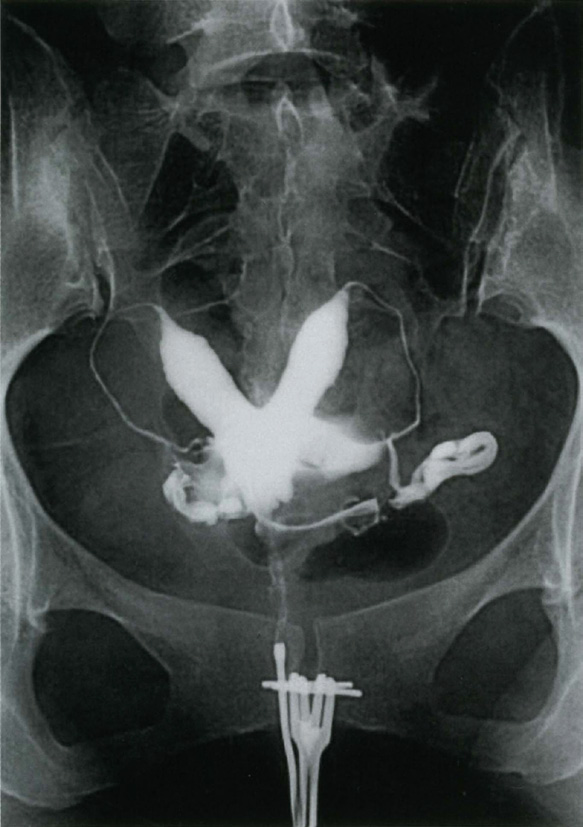
| 所見 | 意味 |
|---|---|
| 月経28日周期・整、基礎体温2相性、高温期14日 | 排卵は正常 |
| 黄体期7日目のプロゲステロン13.4ng/mL（基準内） | 黄体機能不全を否定 |
| 夫の精液所見は正常 | 男性因子を否定 |
| 抗核抗体・抗リン脂質抗体が陰性 | 抗リン脂質抗体症候群を否定 |
| 染色体検査は夫婦ともに正常 | 染色体均衡型転座を否定 |
| 子宮卵管造影で異常 | 残るのは子宮形態異常のみ |
| 疾患 | HSG所見 |
|---|---|
| 子宮奇形 | 子宮腔が2つに分かれる（双角子宮・中隔子宮） |
| 子宮筋腫（粘膜下） | 子宮腔の辺縁が平滑に圧排・欠損 |
| 子宮内膜ポリープ | 子宮腔内の小さな類円形の陰影欠損 |
| Asherman症候群 | 境界不整・角ばった多発性の陰影欠損（子宮腔癒着） |
| 卵管閉塞 | 卵管が途中で途絶し造影剤の腹腔内散布がない |
| 卵管留水腫 | 卵管膨大部が囊状に拡張し腹腔内へ流出しない |
| 選択肢 | 評価 |
|---|---|
| ａ 子宮頸管縫縮術 | 誤り。頸管無力症（妊娠中期の無痛性頸管開大による流早産）の治療。本例は妊娠していない |
| ｂ 子宮筋腫核出術 | 誤り。内診で子宮はほぼ正常大で筋腫を示す所見がない |
| ｃ 子宮形成術 | 正しい。子宮奇形（中隔子宮）に対する治療 |
| ｄ 単純子宮全摘出術 | 誤り。挙児希望があり子宮温存が絶対条件 |
| ｅ 卵管形成術 | 誤り。妊娠は成立しており卵管の疎通性は保たれている |
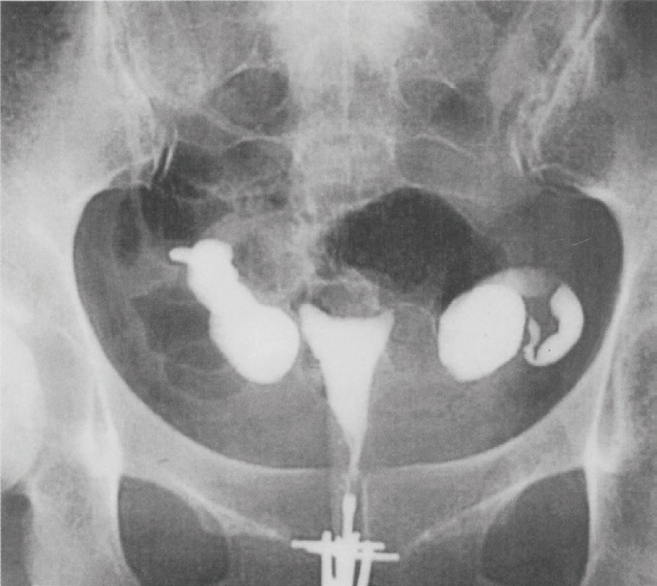
| 精液所見 | 評価 |
|---|---|
| 量2.5mL | 基準1.4mL以上 → 正常 |
| 精子濃度8×10⁶/mL | 基準16×10⁶/mL以上 → 乏精子症〈oligozoospermia〉 |
| 運動率55％ | 基準42％以上 → 正常 |
| 奇形率15％（正常形態85％） | 基準正常形態4％以上 → 正常 |
| 疾患 | HSG所見 |
|---|---|
| 子宮奇形 | 子宮腔が2つに分かれる（双角子宮・中隔子宮） |
| 子宮筋腫（粘膜下） | 子宮腔の辺縁が平滑に圧排・欠損 |
| 子宮内膜ポリープ | 子宮腔内の小さな類円形の陰影欠損 |
| Asherman症候群 | 境界不整・角ばった多発性の陰影欠損（子宮腔癒着） |
| 卵管閉塞 | 卵管が途中で途絶し造影剤の腹腔内散布がない |
| 卵管留水腫 | 卵管膨大部が囊状に拡張し腹腔内へ流出しない |
| 選択肢 | 評価 |
|---|---|
| ａ 乏精子症 | 正しい。精子濃度8×10⁶/mLは基準（16×10⁶/mL）未満 |
| ｂ 双角子宮 | 誤り。子宮は正常大で、子宮腔の形態異常を示す記載がない |
| ｃ 子宮腔癒着症 | 誤り。月経は正常に来ており子宮内容除去術の既往もない |
| ｄ 多囊胞卵巣症候群 | 誤り。月経周期は整、基礎体温2相性、LH 4.8・テストステロン42と正常 |
| ｅ 卵管留水腫 | 正しい。右卵管妊娠手術の既往があり卵管因子が示唆される |
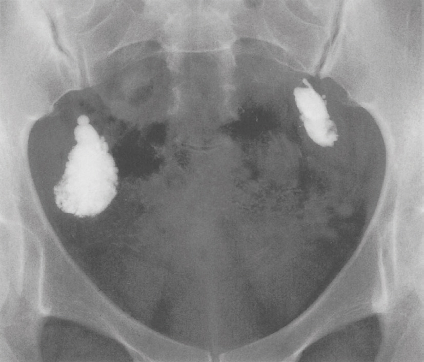
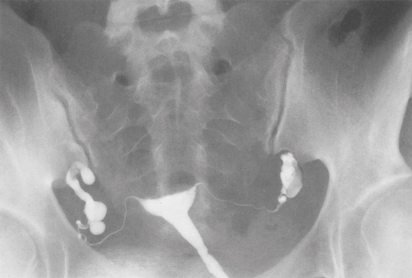
| 疾患 | HSG所見 |
|---|---|
| 子宮奇形 | 子宮腔が2つに分かれる（双角子宮・中隔子宮） |
| 子宮筋腫（粘膜下） | 子宮腔の辺縁が平滑に圧排・欠損 |
| 子宮内膜ポリープ | 子宮腔内の小さな類円形の陰影欠損 |
| Asherman症候群 | 境界不整・角ばった多発性の陰影欠損（子宮腔癒着） |
| 卵管閉塞 | 卵管が途中で途絶し造影剤の腹腔内散布がない |
| 卵管留水腫 | 卵管膨大部が囊状に拡張し腹腔内へ流出しない |
| 選択肢 | 評価 |
|---|---|
| ａ 人工授精 | 誤り。卵管閉塞では精子と卵子が出会えず無効。性交後試験も良好で頸管因子はない |
| ｂ 体外受精・胚移植 | 正しい。卵管を迂回して受精・着床を成立させる |
| ｃ 子宮頸管縫縮術 | 誤り。頸管無力症の治療で不妊治療ではない |
| ｄ 子宮筋腫核出術 | 誤り。子宮は正常大で筋腫を示す所見がない |
| ｅ 子宮形成術 | 誤り。子宮奇形を示す所見がない |